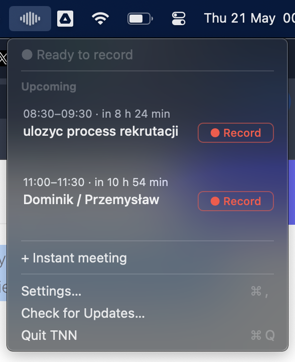
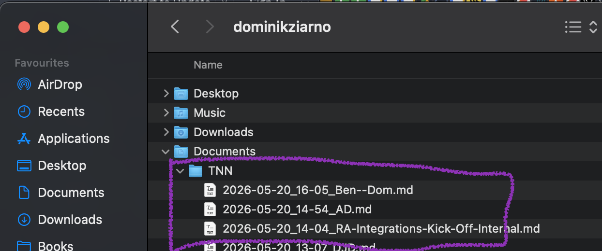
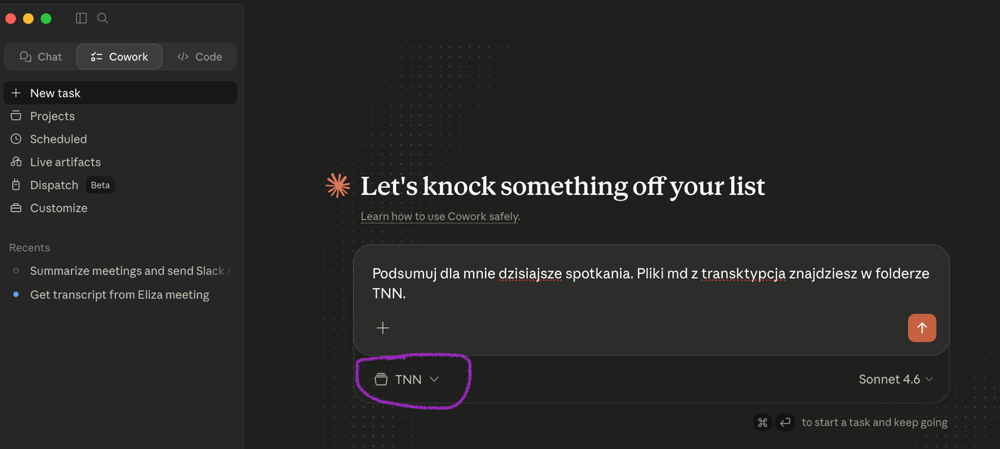
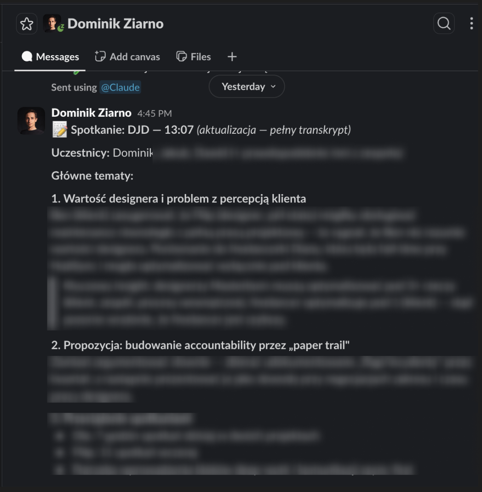

Zapraszam do wersji beta TNN.
Zbudujmy razem kontekst naszych projektów w Masterbornie. TNN nagrywa Wasze spotkania, robi z nich transkrypcję lokalnie na Waszym Macu i daje Wam materiał, z którego Claude potrafi wygenerować notatkę. Wszystko offline, nic nie wychodzi z komputera.
Sprawdź, czy to flow u Was działa.
Po co to robimy
Chcę, żebyśmy zaczęli budować wspólny kontekst firmowy. Wiedza w MasterBorn żyje dziś w głowach, w wątkach na Slacku, w pojedynczych dokumentach. Bardzo dużo z niej po prostu ginie po spotkaniach.
Jeśli zaczniemy systematycznie zapisywać i porządkować to, co się dzieje w projektach, otwiera nam to wiele rzeczy, np.:
- Onboarding nowych osób przyspiesza. Nowa osoba w projekcie (albo Wy w nowym projekcie) może w jednym miejscu przeczytać wszystko, co ktokolwiek z MasterBorn już na ten temat powiedział. Growth, PPO, designerzy, calle z klientem.
- Wspólny mózg o projekcie dla wszystkich. Decyzje, ustalenia z klientem, kontekst „dlaczego coś jest tak, a nie inaczej" zostają zapisane, są wyszukiwalne i dostępne dla każdej osoby w MasterBorn - zamiast wyparowywać po spotkaniu.
Ta beta to pierwszy krok. Sprawdzamy najpierw, czy mamy dobre nagrania i dobre podsumowania. Kolejny duży milestone to wrzucanie odpowiedniego kontekstu w odpowiednie miejsca - do naszego hivemind 🐝
Instrukcja
-
Pobierzcie aplikację z thoughtsnotnotes.com.
Dostaniecie plik
.dmgdo ręcznej instalacji.
- Podepnijcie swój kalendarz. Aplikacja zacznie czytać Wasze spotkania i minutę przed każdym wyświetli powiadomienie z propozycją włączenia nagrywania jednym kliknięciem.
-
Nagrajcie spotkanie i normalnie w nim uczestniczcie. Wszystko powinno się nagrać.
Możecie zatrzymać nagrywanie ręcznie albo zatrzyma się samo po kilkudziesięciu sekundach ciszy.
Audio zapisuje się lokalnie u Was na komputerze (godzinna rozmowa to ok. 1 GB).
TNN siedzi w menubarze i pokazuje nadchodzące spotkania - wystarczy kliknąć Record:

Apka czyta Wasz kalendarz i pokazuje nadchodzące spotkania w menubarze - jedno kliknięcie i nagrywa. -
Poczekajcie na transkrypcję. W tle aplikacja przerabia audio lokalnym modelem
Whisper (~500 MB, pobiera się raz, służy wyłącznie do transkrypcji i nie powinien Wam
obciążać kompa). Efekt to plik
.mdw folderze~/Documents/TNN:
Pliki nazywane są w schemacie YYYY-MM-DD_HH-MM_nazwa-spotkania.md, więc łatwo je potem znaleźć i odnieść do siebie. -
Wygenerujcie podsumowanie w Claude Cowork. To dla mnie domyślna ścieżka na tę betę.
W Claude Cowork dajcie sobie dostęp do folderu
~/Documents/TNN(czyli ten sam folder, w którym leżą pliki.md) - i Claude może Wam podsumować spotkania wprost z transkrypcji:
Wystarczy prosty prompt typu „podsumuj mi dzisiejsze spotkania, pliki .md z transkrypcją znajdziesz w folderze TNN". -
Możecie wysłać sobie podsumowanie konektorem na Slacka. Claude przez konektora Slacka
może od razu wrzucić strukturalne podsumowanie spotkania na wybrany kanał albo do Was na DMa.
U mnie wygląda to tak:

Claude sam wysyła strukturalne podsumowanie na mojego Slacka po przeczytaniu transkrypcji z folderu TNN. -
Dzięki za pomoc 🙏
Bardzo chętnie przyjmę feedback i pięknie Wam dziękuję za pomoc. Mam nadzieję, że razem zbudujemy coś fajnego dla MasterBorn.
Wyślij feedback
Zadanie na szóstkę
Następny krok, taki „na szóstkę", to przygotowanie skilla do pisania notatek ze spotkań. Czyli ustalonego promptu / agenta, który z transkrypcji robi notatkę dokładnie w takiej formie, jakiej potrzebujemy w MasterBorn - z naszymi sekcjami, naszym tonem, naszymi heurystykami.
Ja będę nad tym myślał. Chętnie przyjmę pomoc - jeśli ktoś z Was chce się tego podjąć, wrzućcie na Slacka. To dobre zadanie do wkręcenia się w temat i realnie przyspieszy nam całą resztę pracy.